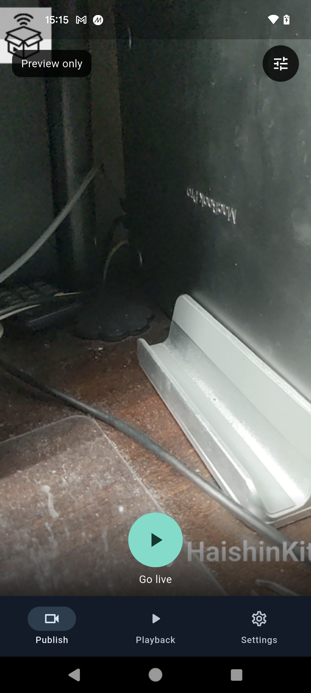
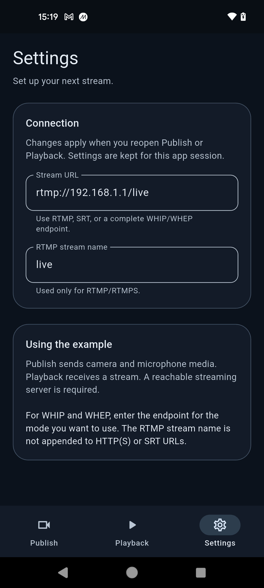
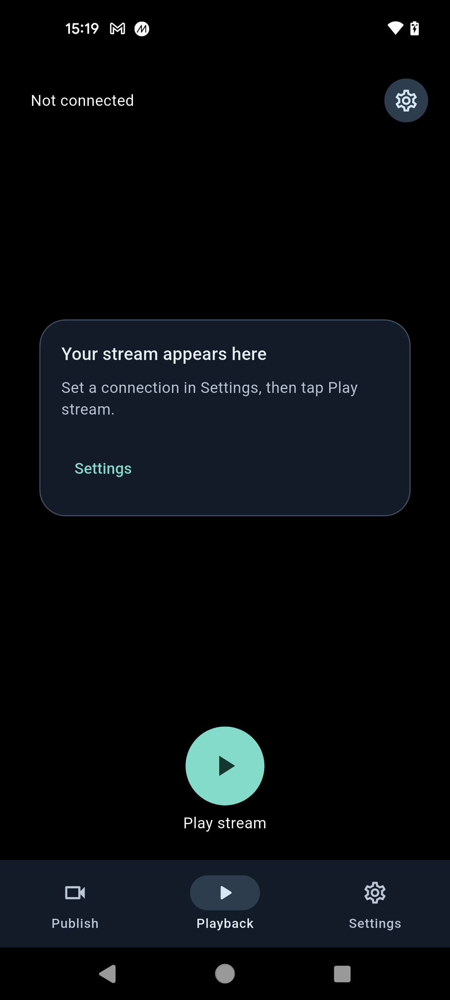

📡 HaishinKit Plugin


A Flutter interface to HaishinKit's native streaming libraries for Android, iOS, and macOS. Capture, compose, preview, publish, and play audio/video with RTMP, RTMPS, SRT, WHIP, and WHEP.
API reference · pub.dev · Example app
🎨 Features
- Camera and microphone capture through a common
MediaMixerinterface. - RTMP/RTMPS and SRT publishing/playback, WHIP publishing, and WHEP playback.
- Text, image, and video compositions, snapshots, and ScreenObject editing APIs.
- Native video textures for Flutter previews and playback.
- A common
StreamSessionlifecycle across supported platforms.
📦 Installation
Add the published package to your app's pubspec.yaml:
dependencies:
haishin_kit: ^0.19.1
flutter pub get
Use Flutter 3.44+ and Dart 3.12+. Platform requirements:
| Platform | Minimum |
|---|---|
| Android | Android 7 / API 24 with Flutter 3.44; compile SDK 37+ |
| iOS | iOS 15; Xcode 26+ |
| macOS | macOS 12; Xcode 26+ |
The Android app minimum follows Flutter's SDK minimum; the native bridge declares API 23. Android WHIP audio publishing requires an Opus encoder, provided by Android 10+.
Apple builds use Swift Package Manager. Enable it before building:
flutter config --enable-swift-package-manager
See the integration guide in the library documentation for permissions, Android build properties, Apple setup, and session lifecycle.
📚 Documentation
Use the generated dartdoc reference for capture, composition, stream sessions, and protocol integration.
The install example targets 0.19.1. The main branch contains the
refreshed example and may include changes ahead of the published package or API
reference; use a matching release tag when working with a published version.
🐾 Examples
The Flutter sample demonstrates camera publishing, playback, text/image overlays, optional picture-in-picture camera capture, and touch editing. Its studio interface keeps the preview clear, with camera tools in a bottom sheet.
Flutter example running on Android (English, Pixel 5a):



From a repository checkout:
cd example
flutter pub get
flutter run
A reachable streaming server is required for publishing/playback. See the example guide for endpoint settings and platform setup.
🌏 Native projects
- HaishinKit.swift — Apple platforms.
- HaishinKit.kt — Android.
💖 Support
Community discussion is open to everyone following the code of conduct. Technical support is available to contributors, academic researchers, and sponsors. The $50/month sponsorship tier includes priority support through Issues/Discussions.
📜 License
BSD 3-Clause. Native dependencies carry their own licenses; see the native projects for third-party notices.
Libraries
- haishin_kit
- Capture, mix, preview, publish, and play audio and video on native platforms.